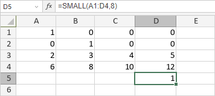

SMALL funkcija
SMALL funkcija je jedna od statističkih funkcija. Koristi se za analizu skupa podataka i pronalaženje k-tog najmanjeg broja.
Sintaksa
SMALL(array, k)
SMALL funkcija ima sledeće argumente:
| Argument | Opis |
|---|---|
| array | Izabrani opseg ćelija koje želite da analizirate. |
| k | Pozicija broja po veličini od najmanjeg, numerička vrednost veća od 0. |
Napomene
Kako primeniti SMALL funkciju.
Primeri
Slika ispod prikazuje rezultat koji vraća SMALL funkcija.
